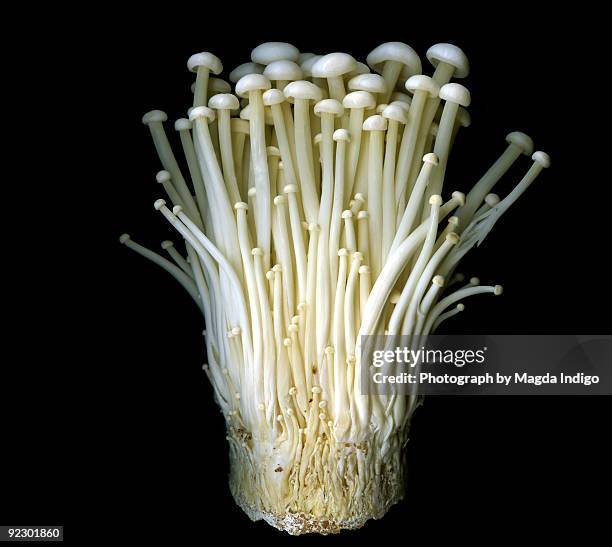

NaI KoDaI
ENOKI MUSHROOMWhen it comes to delicate and exquisite mushrooms, the Enoki mushroom (Flammulina velutipes) stands out as a true gem. With its slender, crisp texture and mild, slightly sweet flavor, Enoki mushrooms are gaining popularity in kitchens around the globe. Whether you're a professional chef or a home cook exploring new ingredients, Enoki mushrooms offer a unique touch to your culinary creations. What Makes Enoki Mushrooms Special?Enoki mushrooms are renowned for their distinctive appearance and delicate nature. They feature long, thin stems crowned with small, white caps that cluster together in elegant, graceful bunches. Their appearance is reminiscent of a delicate bouquet, making them not only a treat for the palate but also a visually appealing addition to any dish. The flavor profile of Enoki mushrooms is subtle yet sophisticated. Their taste is often described as mild, slightly nutty, and with a hint of sweetness. This gentle flavor allows them to blend seamlessly into a variety of dishes without overwhelming other ingredients. Their crunchy texture adds a pleasant contrast to both hot and cold dishes. Culinary Uses and RecipesOne of the greatest attributes of Enoki mushrooms is their versatility in the kitchen. They are commonly used in Asian cuisine but can also enhance a wide range of dishes. Their crisp texture makes them ideal for salads, where they add a refreshing crunch. They are also a fantastic addition to soups, where they retain their texture even when cooked, providing a delightful contrast to the broth. Nutritional BenefitsEnoki mushrooms are not only delicious but also packed with nutritional benefits. They are low in calories and high in fiber, making them a great choice for those seeking a healthy diet. They also provide essential vitamins and minerals, including B vitamins, potassium, and antioxidants. These nutrients support overall health and contribute to a balanced diet. With their delicate flavor and crisp texture, Enoki mushrooms are a versatile ingredient that can elevate a wide range of dishes. Their unique characteristics make them a valuable addition to any kitchen, adding both aesthetic appeal and nutritional benefits. Explore the world of Enoki mushrooms and discover how this elegant fungus can enhance your culinary adventures. |
 |
FOLLOW US ON THE WEB